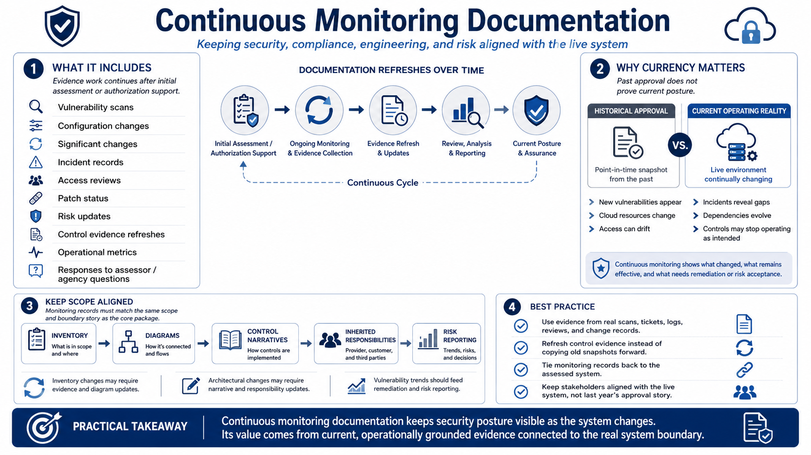

Continuous Monitoring Documentation
Connecting to LMS... Progress: in progress

Narration
Evidence work does not end after initial assessment or authorization support. Continuous monitoring documentation shows whether the security posture remains current as the system changes. It may include vulnerability scans, configuration changes, significant changes at a high level, incident records, access reviews, patch status, risk updates, control evidence refreshes, operational metrics, and responses to assessor or agency review questions.
The key concept is currency. Historical approval does not prove today's posture. New vulnerabilities may be discovered. Cloud resources may change. Access may drift. Incidents may reveal gaps. Dependencies may evolve. Controls may stop operating as intended. Continuous monitoring documentation helps stakeholders understand what has changed, what remains effective, what requires remediation, and what risk is being carried forward.
Continuous monitoring records should align with the same scope and boundary story used in the core package. If the inventory changes, diagrams and evidence may need review. If a significant architectural change occurs, control narratives and inherited responsibility assumptions may need updates. If a vulnerability trend worsens, remediation documentation and risk reporting should reflect that. Monitoring evidence is only useful when it connects back to the system being assessed.
The best continuous monitoring documentation reflects real operations. It should come from scans, tickets, logs, reviews, change records, incident processes, and control evidence refreshes that teams actually use. It should not be a historical snapshot copied forward indefinitely. The purpose is to keep security, compliance, engineering, and risk stakeholders aligned with the live system, not with last year's approval story.